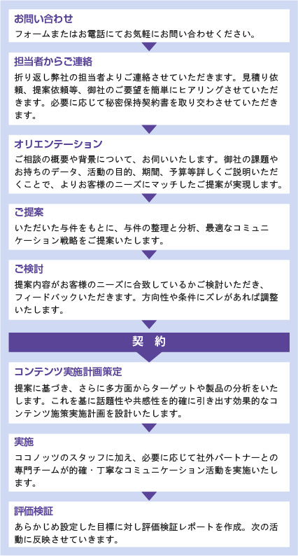

医療や健康に関わるすべての機関、企業のニーズに対し、ステークホルダーや生活者とのよりよい関係を構築することで課題解決を図ります。
多様なメディアやソーシャル上で医療情報が溢れるいま、生活者にとって有益な情報を選択することが難しい時代といわれています。 適切なPR活動によって生活者、メディアからの信頼を獲得し、医療機関、製薬企業などの情報提供者との懸け橋となります。
 製薬メーカー
製薬メーカー 医療機器メーカー
医療機器メーカー ヘルスケア関連企業
ヘルスケア関連企業 医療機関／研究所
医療機関／研究所 業界団体
業界団体 患者会
患者会 展示会
展示会●PRサービスのポイント
1.医療・ヘルスケア業界特有の情報発信を熟知しているココノッツならではのメッセージ設計
医療系事業会社に在籍歴のあるメンバーが、薬事法や医療広告ガイドラインなど法的レギュレーションに添った適切な広報活動をご提案します。
2.医療者との協力関係を持ちながら広報活動を展開
医学界に特有の考え方や慣習を理解し、医師をはじめとする医療従事者との協力関係を持ちながら広報活動を展開してまいります。
3.多様な情報チャネルを活用した広報活動をご提案
信頼される確かな情報を生活者に効率よく届けるために多様な情報チャネルを活用した実りある広報活動を展開してまいります。
4.医療を専門とするジャーナリストとのネットワーク
ココノッツは医療を専門とするジャーナリストと日常的にネットワークを維持し、パブリシティばかりでなく情報収集の面でも大きな力となります。
●実施体制
ココノッツには医療関連の事業会社の経験を持つメンバーのほか、webメディア運営会社在籍経験者、薬事承認に関わる事務経験者、デザイナーなど 多彩なメンバーが在籍しています。この中より、各プロジェクトやクライアントにふさわしいメンバーでチームを作り担当させていただきます。
●経験疾患領域・製品
慢性疾患、循環器疾患、神経変性疾患、がん疾患、筋疾患、精神疾患、発達障害、整形外科系疾患、眼疾患、耳鼻咽喉疾患、希少疾患、 難治性疾患、生殖医療、歯科疾患、予防ワクチン、オーファンドラッグ、遺伝子治療、人工関節、画像診断装置、人工呼吸器、 人工心肺装置、眼科治療機器、滅菌器、病理診断、レーザー治療、診療データ共有システム、医薬品開発支援
●サービス提供の流れ

●サービス提供の流れ
●契約形態と費用について
2つの契約形態があります。お客様のニーズに応じて適切な形態をご提案させていただきます。
| リテイナー契約 | 原則として年間を通し、お客様のコミュニケーション上の課題に総合的に取り組みます。 毎月定額のリテイナーフィーをお支払いいただき、お打ち合わせから広報計画立案、パブリシティ活動の実質、サポート等、 お客様のニーズに合わせて内容を決定いたします。 |
|---|---|
| プロジェクト個別契約 | プレスセミナーなどのメディアイベント、危機管理対応、メディアトレーニングなど、単一プロジェクトのご相談にも応じます。 御見積等お気軽にご相談ください。 |
費用について：
担当スタッフがサービスやノウハウを提供する時間に準じた料金設定をしています。
リテイナー契約の場合、サービス内容や依頼内容に基づいて、担当チームを編成し、担当スタッフの時間単価と想定活動時間をもとに固定の月額料金を設定します。
またプロジェクト契約の場合も原則として同様の考え方で料金を設定いたします。